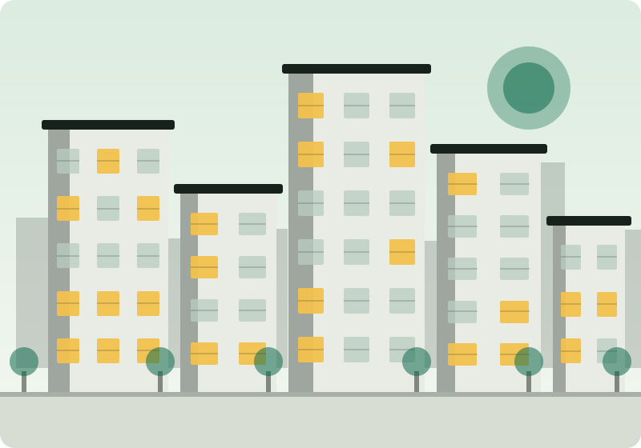

A
Member One
Database design
ER diagram, normalisation, schema and the seed data.
Baribari started from a simple observation: most landlords in our city still run several buildings out of one notebook and a calculator.
Ask any building owner in Chattogram what his flats earned him last month and the answer takes ten minutes of flipping pages. Rent is written in one book, the electricity bill is a stack of receipts, the caretaker's salary is remembered rather than recorded, and the plumber's bill is a number someone said on the phone.
None of that is hard data to keep. It is just spread out. So we modelled it properly - sixteen tables, clear relationships, no duplicated facts - and put a simple screen in front of it.
This is our Database Management Systems course project. The database design came first: the ER diagram, the cardinalities and the normalisation. The website exists to prove the design works.

Replace these names and roles with your own group members before you submit.
Database design
ER diagram, normalisation, schema and the seed data.
Backend
PHP API, sessions, authentication and query design.
Frontend - dashboard
Owner and manager dashboards, tables, forms and charts.
Frontend - website
Home page, features, pricing, about, FAQ and contact pages.
Testing and documentation
Test cases, README, report writing and the presentation.
Sixteen tables with foreign keys, cascade deletes and unique constraints that enforce the weak-entity identities.
A small JSON API. Prepared statements everywhere, bcrypt for passwords, sessions for login state.
No framework and no build step. Every page is a file you can open and read.
Requirement gathering, talking to two building owners, listing the entities and drawing the first ER diagram.
Normalising to 3NF, writing the schema, building the API and the dashboards, loading demo data.
Public website, responsive testing on phones and tablets, bug fixing, documentation and the final report.